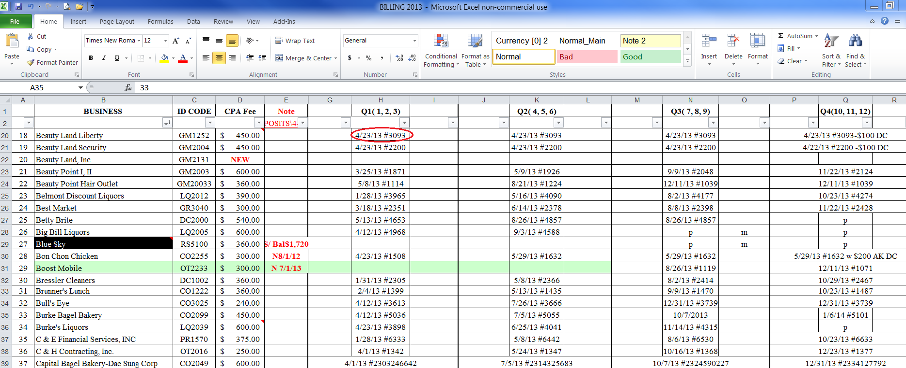
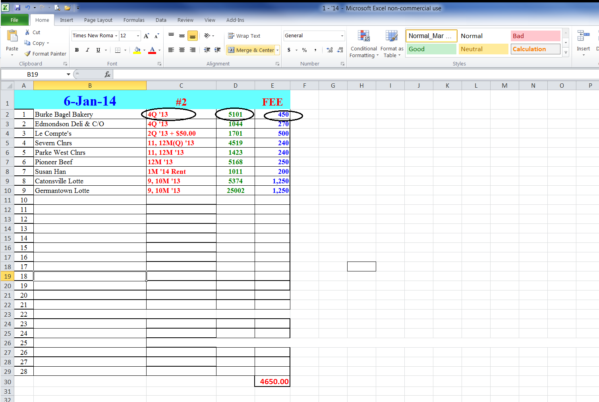
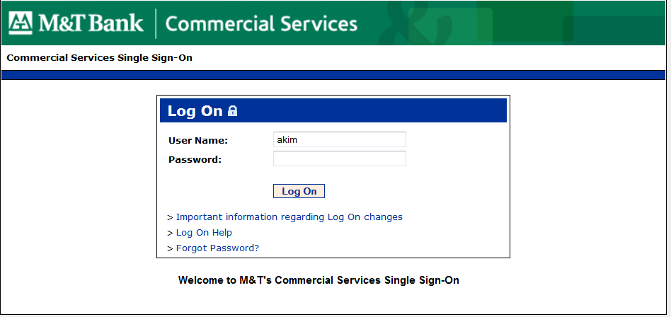
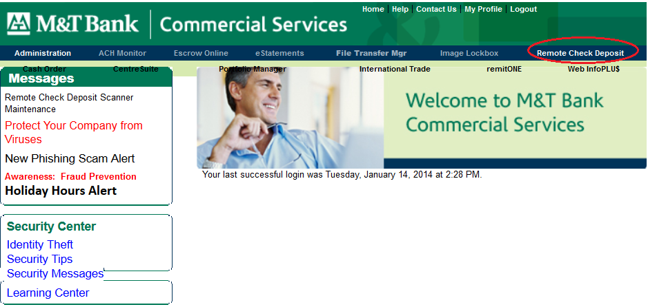
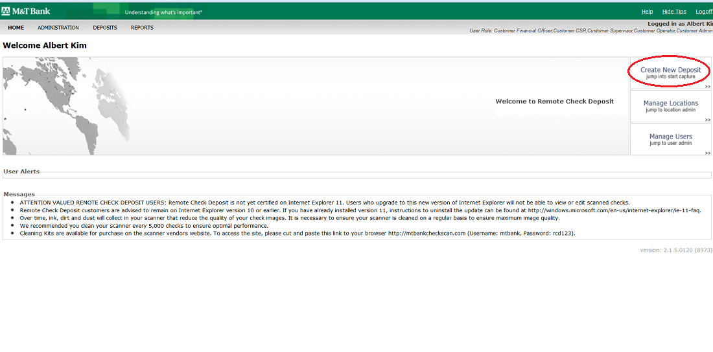
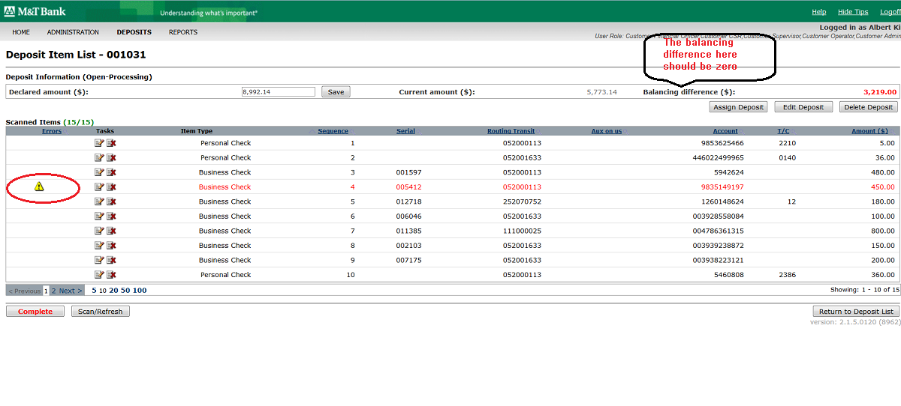
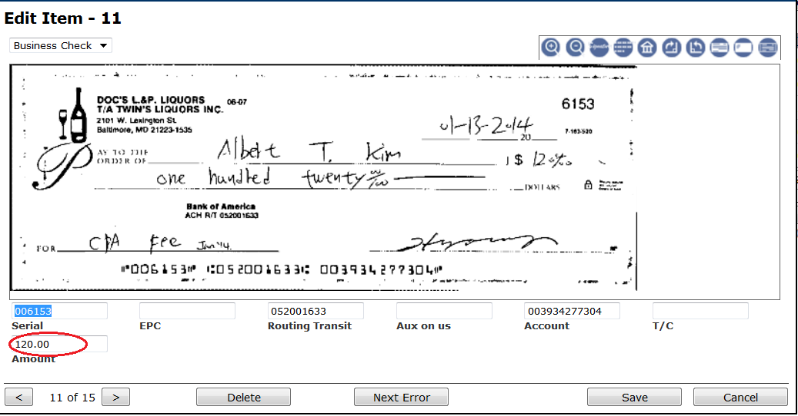
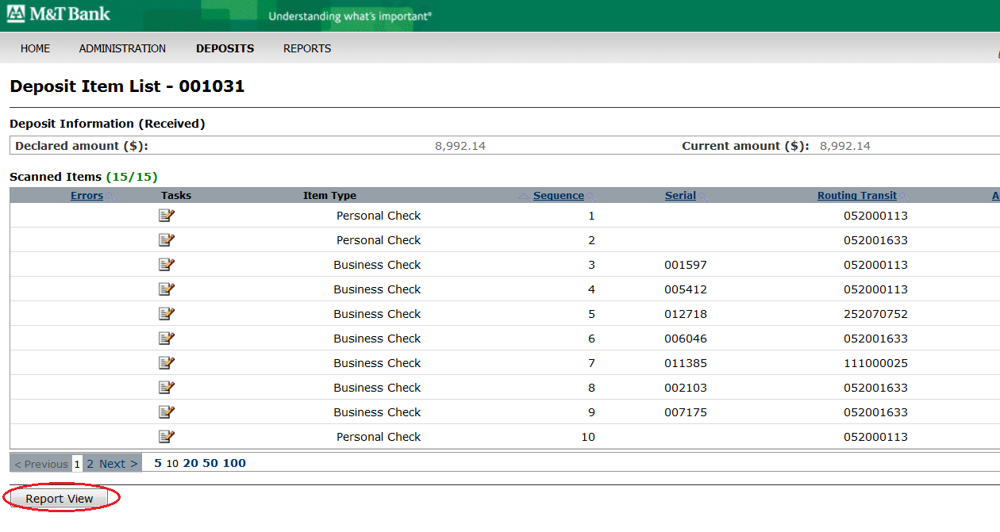
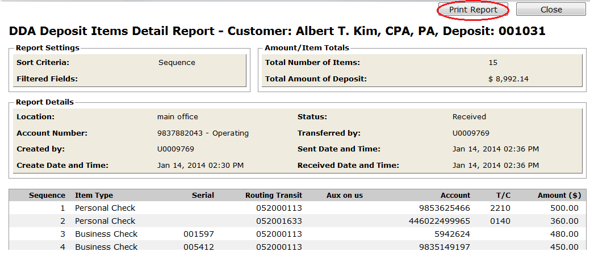
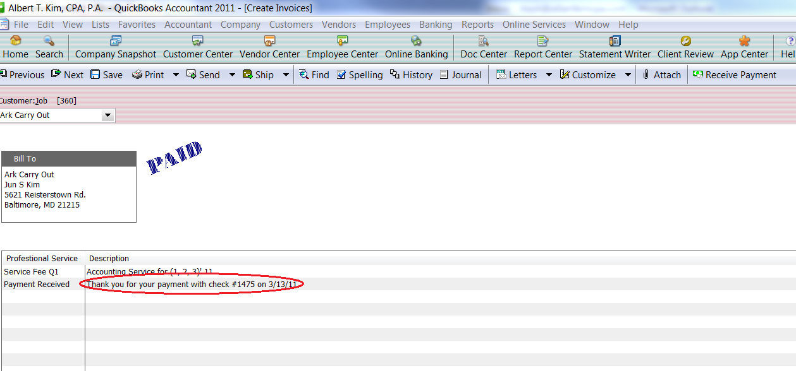

How to deposit Check
Big pic :

Details:
->Collect the checks into one envelop
->Document the info of checks in both "BILLING 2014" and "1-14"(Means, Jan,2014)
BILLING 2014:
Q1- the first quarter(Including Jan, Feb, Mar)
Write down the date of deposing, the check number

1-14 :
Write down the name, detail, check number, amount of each check, as follow:

->Go to M &T web site: https://commercialservices.mandtbank.com/#

->Log on

-> Click ' Create New Deposit'

-> Check the information below, and fill in the "Number of items" as the number of checks, the "Declared amount" as the total amount of all the checks collected.
If all correct, click "Start Capture"
-> Begin to scan the checks with the deposing machine
->Check each record(focus on amount), till make sure "Balancing difference is zero"

-> If there is a yellow ! sign here, meaning some error, double click that record, and goes to the following page.Change the amount manually, and save.

After make sure each check is correct, click button "Report View"

-> The final report looks like below, and print out 3 copies.

->Double check the detailed information of checks on this report with the detailed information on "1-14", make sure they are exactly same
-> Wited down the information of all the deposited checks (check Number, date in "Thank you for your payment with...") into Quick Book. [Same as "How to create the invoice"]

---------------------------------------End------------------------------------------